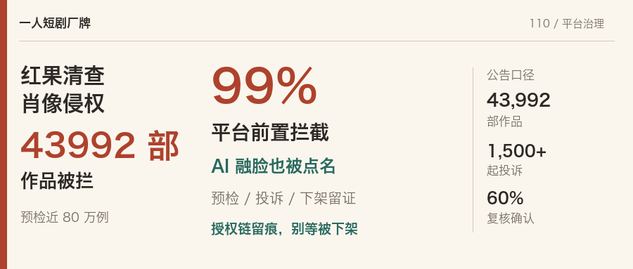

待发 · 2026-11-18 · 平台治理短项

红果清查肖像侵权：43992部作品被拦
11月17日下午，红果短剧官方发布肖像侵权专项治理公告。据证券时报、IT之家转述，截至2026年10月，平台累计拦截、下架、修复疑似肖像侵权作品43,992部，其中99%由平台主动前置拦截。
三个环节，分别做什么？
| 环节 | 动作 | 已披露数字 |
|---|---|---|
| 平台自审 | 上线前主动拦截 | 43,992部，99%前置拦截 |
| 制作预检 | 免费检测物料 | 检测近80万例，拦截9万余例 |
| 侵权投诉 | 举报/邮箱受理 | 1,500余起，约60%确认侵权 |
预检工具2026年8月上线，创作者可在物料制作阶段自查；投诉入口在作品播放页右上角菜单，权利人或代理方也可发邮件到 hongguojubao@bytedance.com。
AI融脸为什么被点名？
平台公告说，部分创作者用融脸、修改原始肖像素材等方式，导致部分前置拦截失效。工具能拦一部分，但改脸、换脸仍可能绕过去；上线后出问题，平台会按规则处置，发布者也要能拿出授权。
创作者现在要做什么？
第一，真人肖像、AI虚拟形象、上游IP形象，授权文件分开留；第二，上线前用平台预检，别等被下架；第三，收到投诉先下架、留证据、走申诉，不要用“二创”“致敬”当授权。对一人公司，授权链留痕、预检记录留档，是可复用的做法。
边界：43,992部、99%、80万例、9万余例、1,500余起、60%均来自红果官方公告及证券时报/IT之家转述；99%和60%为平台自述口径，未经独立审计；预检工具与投诉流程未实测，公告原文未直接取得。本文不构成法律意见。
---
来源：IT之家《红果短剧宣布专项治理肖像侵权，累计拦截、下架、修复作品 43992 部》（2026-11-17 15:35），https://www.ithome.com/1/028/277.htm ；证券时报·人民财讯《红果短剧针对肖像侵权问题开展专项治理》（2026-11-17 15:52），https://www.stcn.com/article/detail/4339982.html 。